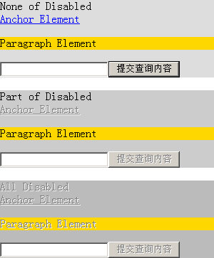
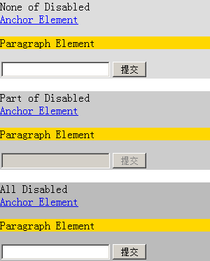

在 W3C HTML 4.01 的属性表中属性 "disabled" 一行中标示出了这个布尔型属性应用于以下表单类元素：
另外 HTML 4.01 规范关于失效的控件（Disabled controls）的描述中也对 disabled 属性进行了详细介绍：被设置 disabled 属性的表单控件将不再允许用户输入。而 disabled 属性使一个元素出现如下特征：
关于 disabled 属性及表单相关 的详细信息，请参考 HTML 4 .01 规范 17.12.1 中的内容。
在所有版本IE中，"disabled" 属性对非表单控件元素同样有效果，被设置了 "disabled" 属性的元素的前景色将被渲染为灰色且带有白色阴影。"disabled" 属性可以被子元素继承。但对于表单控件元素，继承而来的 "disabled" 属性仅影响其外观渲染，并不能使其功能失效。
由于 IE 中的对于 "disabled" 属性的使用是不标准的，这将造成 IE6 IE7 IE8 浏览器与其他浏览器产生不同的渲染效果。
| IE6 IE7 IE8 |
|---|
首先看一组关于 "disabled" 属性的例子。
分析以下代码：
<div style="background:#DDD;">
None of Disabled
<div><a href="#" style="color:blue;">Anchor Element</a></div>
<p style="background:gold;">Paragraph Element</p>
<input type="text" /><input type="submit" onclick="alert('A');" />
</div>
<br />
<div style="background:#CCC;">
Part of Disabled
<div><a href="#" disabled="disabled">Anchor Element</a></div>
<p style="background:gold;">Paragraph Element</p>
<input type="text" disabled="disabled" /><input type="submit" disabled="disabled" onclick="alert('A');" />
</div>
<br />
<div disabled="disabled" style="background:#BBB;">
All Disabled
<div><a href="#">Anchor Element</a></div>
<p style="background:gold;">Paragraph Element</p>
<input type="text" /><input type="submit" onclick="alert('A');"/>
</div>
以上代码分为三组：
根据 W3C HTML4 规范对 "disabled" 属性的规定，"disabled" 属性只对表单控件类元素有效，其他元素不应对此属性有任何解释，即 "disabled" 属性对非表单控件类元素无效。
以上代码在不同的浏览器环境中的表现：
| IE6 IE7 IE8 | Firefox Opera Safari Chrome |
|---|---|
|  |  |
对第二组和第三组在 IE 中进一步测试，测试 A、INPUT[type="text"] INPUT[type="submit"] 这些可获得输入焦点的元素：
| IE6 IE7 IE8 | 第二组 | 第三组 |
|---|---|---|
| 元素点击后是否可以跳转 | 可以 | 可以 |
| INPUT[type="text"] 是否可以输入文字 | 不可以 | 可以 |
| INPUT[type="submit"] 点击后是否可以相应 onclick 事件 | 不可以 | 可以 |
可见：
应避免在非表单控件类元素上使用 "disabled" 属性。
若需要使一个普通元素呈现出 IE 中为其设置 "disabled" 属性后的效果，可以用 CSS 设计其展现形式，以保证在所有浏览器下达到一致的显示。
| 操作系统版本: | Windows 7 Ultimate build 7600 |
|---|---|
| 浏览器版本: |
IE6 IE7 IE8 Firefox 3.6 Chrome 5.0.342.2 dev Safari 4.0.4 Opera 10.50 |
| 测试页面: | form_disabled.html |
| 本文更新时间: | 2010-06-22 |
disabled form a anchor 失效 表单 焦点